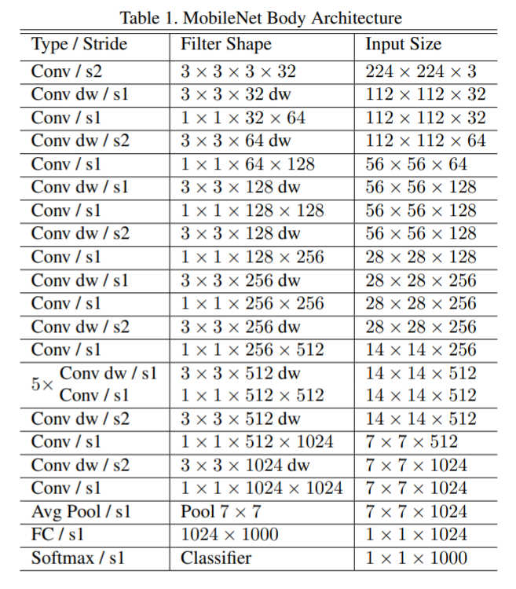
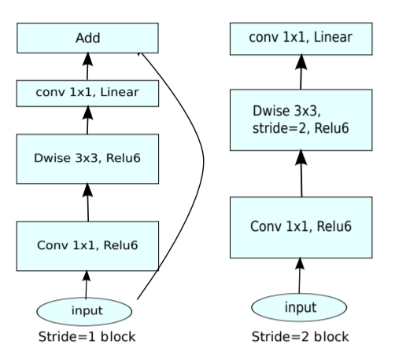
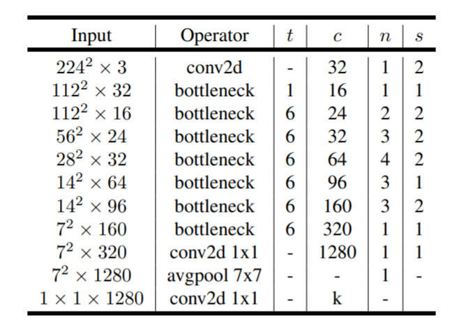

MobileNet
Table of Contents
1 MobileNet
moblienet 是在 的基础上把 3x3 conv2d 换成 , 使得它的参数和 flops 降低很多, 更适合移动端使用.
1.1 MobileNetV1
https://arxiv.org/pdf/1704.04861.pdf 2017/4, google

1.2 MobileNetV2
https://arxiv.org/pdf/1801.04381.pdf 2018/01, google
MobileNetV2 引入了 的 , 但做了一点修改, 称为 `linear bottleneck`
1.2.1 Linear Bottleneck
当 feature map 很小时直接做 relu 会丢失很多数据, 那就先用 1x1 conv2d 增大 channel, 然后再做 DepthwiseConv2d+relu, 最后用 1x1 conv2d 恢复成较小 channel.
这个做法和 处理 pooling 的作法类似?
但这个做法与 resnet 的 bottleneck 是反的: resnet 的 bottleneck 是先用 1x1 减小 channel, 然后 conv 完再用 1x1 增大 channel, 所以称为 inverted residuals.

Figure 2: linear bottleneck
mobilenet 的 bottleneck 有两种:
- 当 stride = 1 时, 和 resnet 的 bottleneck 类似, 但 1x1 conv2d 做 expandsion 增大 channel 而不是减小. 同时最后的 1x1 conv2d 没有再接 relu.
- 当 stride = 2 时, 没有 skip connection, 可能是因为 shape 不匹配
1.2.2 Network

- t 表示 expansion 的系数
- n 表示 layer 有这多少个重复的 bottleneck
- s 表示 stride, 同一个 layer 只有第一个 bottlenect 的 stride 为 s, 其它的为 1
- c 输出 channel 数, 同一个 layer 的每个 bottleneck 输出的 channel 均为 c